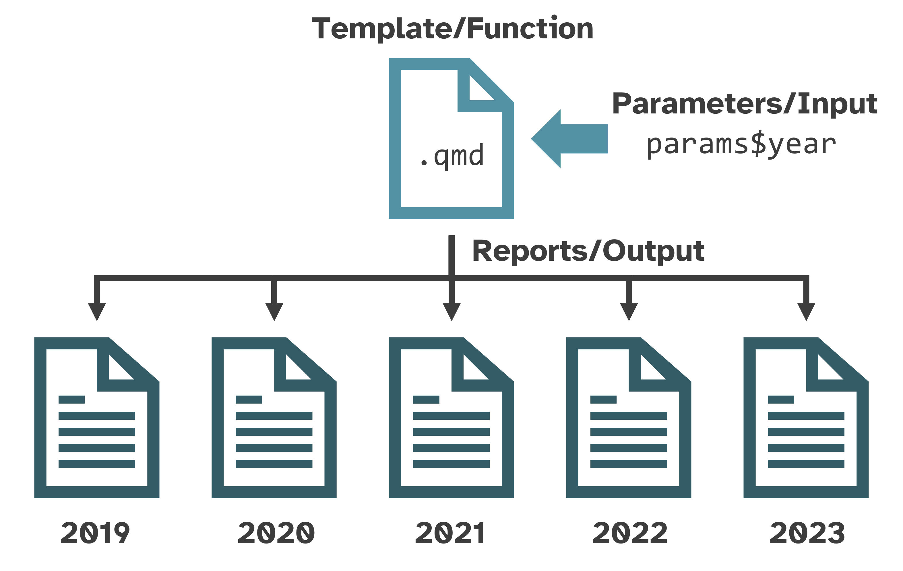

If you’re new to Quarto, first check out the Hello, Quarto tutorial and explore the documentation.
This primer is not a comprehensive introduction to Quarto. Instead, it provides a brief reference for workflows and features used in {soils}.
File paths
soils::create_soils(path = "soils-demo") creates an
RStudio Project called “soils-demo” with the template Quarto
(.qmd) files, example data, R script, images, style sheets,
and the .Rproj file that designates the directory as an
RStudio Project. All template files use relative paths
instead of absolute paths to ensure the file paths work on anyone’s
computer.
Absolute vs relative paths
❌ Absolute paths start with the root directory and
provide the full path to a specific file or folder
(C:/Users/jryan/Documents/R/projects/soils-demo/data/washi-data.csv).
This path will not work on anyone’s computer unless the
operating system, user, directory structure, and folder names match
exactly.
✅ Relative paths are relative to the
working directory, or the project’s home
(data/washi-data.csv). When working in a RStudio project,
the default working directory is always the root project directory
(where the .Rproj file is). This path will
work on anyone’s computer with this project directory.
{here} package
When a Quarto file renders, its default current working directory is
where the .qmd file lives. To make code more robust, the {here} package builds
relative file paths and takes care of the backslashes or
forward slashes so the path will work no matter the operating
system.
For example, in our new {soils} project,
01_producer-report.qmd imports data using
read.csv(here::here("data/washi-data.csv")).
Parameterized reporting
{soils} uses Quarto to help you generate parameterized reports for each participant in your survey from the same template file.
Parameterized reports are like complex functions where the
function is the .qmd template, the
input are the parameters, and the
output are the reports.

To learn more about parameterized reporting, see the materials for Jadey Ryan’s 20-minute presentation, follow along with her 2-hour code-along workshop, or read the Quarto parameters documentation.
Quarto specific features
{soils} uses several intermediate to advanced Quarto features, listed below with references for further reading.
Shortcodes
Shortcodes are special markdown directives that generate various
types of content. The markdown syntax uses the shortcode name and
attributes inside angle brackets that are nested inside double curly
braces {{< shortcode >}}. Read more in the Shortcodes
article.
Pagebreak
pagebreak inserts native page breaks into a document
regardless of the report format (e.g., HTML, MS Word). Read more in the
Pagebreaks
article.
Include
include embeds content from a separate .qmd
file into the main report. This shortens the number of lines in the main
.qmd file and makes the markdown and code of the project
more modular. Read more in the Includes
article.
Examples found in 01_producer-report.qmd are shown
below.
knitr::knit_child()
The include shortcode is limited and cannot generate dynamic sections
from an “included” Quarto file. {soils} uses the
knitr::knit_child() function as a workaround, thanks to Quishi Yan’s
blog post.
For each measurement group results section,
02_section-template.qmd is used as a template to generate
each section’s header, table, plot, and page break.
The below code is in the
create-measurement-group-sections code chunk of
01_producer-report.qmd.
sections <- purrr::map_chr(measurement_groups, \(group) { # <1>
knitr::knit_child(
input = "02_section-template.qmd",
envir = rlang::env(),
quiet = TRUE
)
})
cat(sections, sep = "\n") # <2>-
purrr::map_chr()loops over each measurement group to generate its section as a child document. - With the chunk option
#| output: asisand thecat(sections, sep = "\n")line, the child documents are embedded within the main producer report.
Divs and spans
Add classes and attributes to regions of content with divs and spans.
Divs
Divs start and end with a fence containing at least three
consecutive colons (:::). The div should be separated by
blank lines from preceding and following blocks.
Divs may or may not use curly braces {} around the class
and attributes. In the below example, columns is a
standalone class, while .column width="50%" is a class with
an attribute.
Divs may also be nested, as shown below. Optionally, more than three consecutive colons to distinguish nested divs from their parents.
Spans
Bracketed text immediately followed by a class or attributes in curly
braces {} will be treated as a span.
[Purple]{style="color:purple;font-weight: bold;font-size: x-large;"} is my favorite color.is rendered as: Purple is my favorite color.
Read more in the Divs and Spans documentation.
Conditional Content
Conditional content classes and attributes control whether content
is or is not displayed in a given format. For example,
to control visibility for HTML formats, use a div with the
.content-visible class and the
when-format="html" OR unless-format="html"
attribute. Read more in the Conditional
Content article.
Tabsets
Tabsets work only in HTML documents and are created with the
::: panel-tabset div. Each top-level heading within the div
creates a new tab. Read more in the Tabsets
article.
The below example shows how
04_soil-health-background.qmd uses include
shortcodes, nested divs, conditional
content, and a tabset to include a tabset
only for HTML reports.
::: {.content-visible when-format="html"}
:::: panel-tabset
{{< include 05_physical-measurements.qmd >}}
{{< include 06_biological-measurements.qmd >}}
{{< include 07_chemical-measurements.qmd >}}
::::
:::
::: {.content-visible unless-format="html"}
{{< include 05_physical-measurements.qmd >}}
{{< include 06_biological-measurements.qmd >}}
{{< include 07_chemical-measurements.qmd >}}
:::